TECx2023 was one of the earliest defining milestones for Thiện Kiến.
It was the first time we were trusted to prepare a tea break at this scale — more than 500 guests per day, across three consecutive days, with a commitment to presenting 18 different selections each day for international guests and speakers.
In the end, Thiện Kiến introduced 21 different selections throughout the event, alongside 100 handcrafted gifts prepared specifically for the speakers.
But more important than the scale was what the experience clarified for us. It became one of the moments where Thiện Kiến began to understand what it was slowly becoming. Not simply a catering team or hospitality provider — but a hospitality practice built around preparing meaningful encounters with Vietnam through food, people, and local culture.
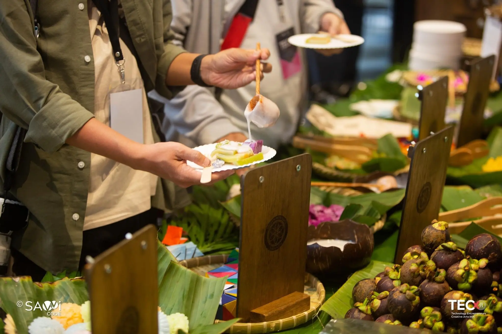
TECx2023 took place during Tết Đoan Ngọ — one of Vietnam's seasonal celebrations tied to harvest, climate, and local food traditions. Thiện Kiến prepared the tea break around the spirit of the occasion itself.
The audience included founders, CEOs, private equity representatives, and international speakers from the United States. For us, this was never simply a break between conference sessions. It was an opportunity for guests from abroad to encounter Vietnam in a natural and unforced way — through taste, seasonality, and hospitality.
The table brought together specialties from different regions of Vietnam.
Mountain plums, lychee, dragon fruit, mango, and vú sữa bách thảo sat together on the same table. Each item carried traces of the place it came from — the climate that shaped it, the soil it depended on, the season it belonged to, and the people who continued preserving it over time.
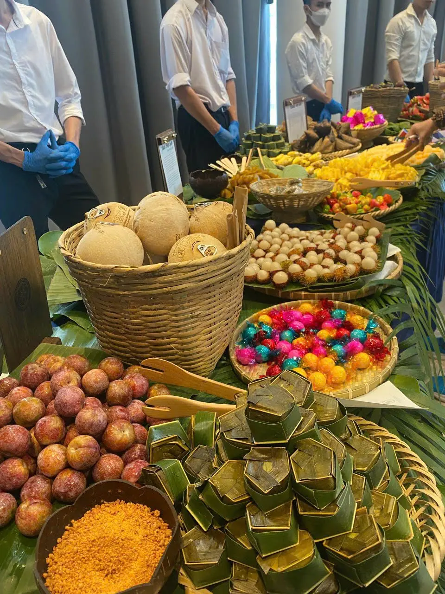
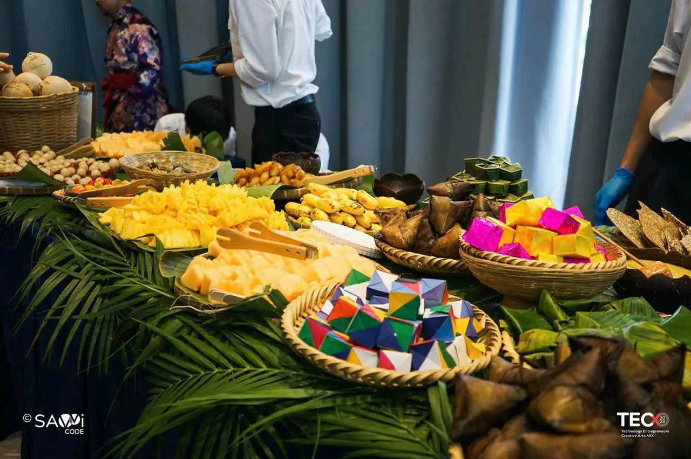
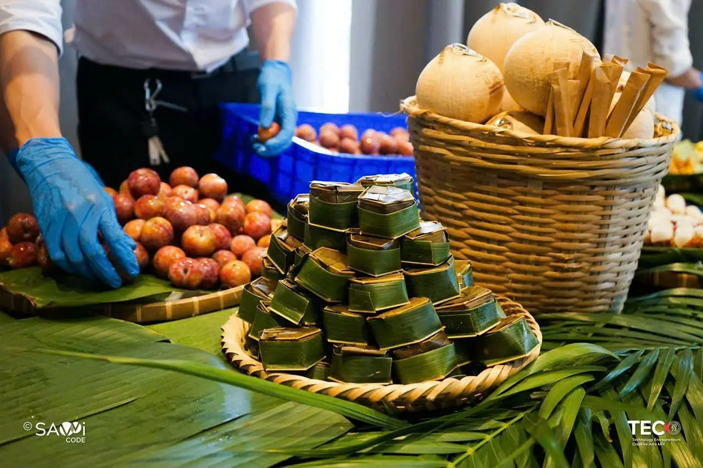
Thiện Kiến has always believed that food carries traces of the place it comes from. For that reason, each menu included not only the names and ingredients of each item, but also a small map of Vietnam showing where every fruit and regional specialty had been sourced.
It was never meant as decoration. It was a way of showing that Vietnam is not one singular taste or landscape, but many different climates, growing regions, and local traditions existing at once.
Many people assume that the country's best fruit only comes from the Mekong Delta. But in reality, every region carries varieties shaped by its own geography, soil, and weather. The best fruit is fruit grown where it truly belongs.
While preparing for TECx2023, Thiện Kiến sourced not only from commercial farms, but also from families still preserving older fruit varieties in their own gardens — varieties that slowly disappeared as farming shifted toward consistency and large-scale production, yet still carried the original flavors many people once grew up with.
At that time, we were not trying to package Vietnam into a product or souvenir. We simply hoped to create a small point of contact — a moment where something that once belonged to Vietnam could still be encountered and remembered.
"After tasting the lychee introduced by Thiện Kiến, she jokingly said she wanted to bring the seed home to plant herself. It was a lighthearted comment. But to us, it quietly meant that something had connected."
One particularly memorable moment came from the wife of Mr. Huy Đỗ, a guest from Hong Kong known for being very selective with food.
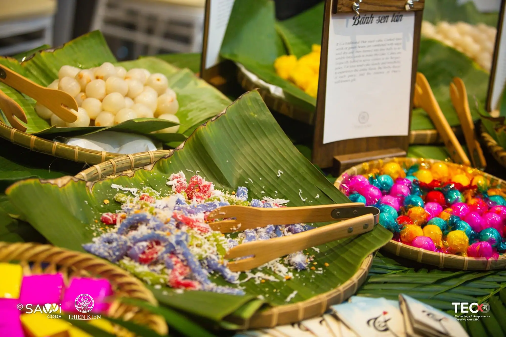
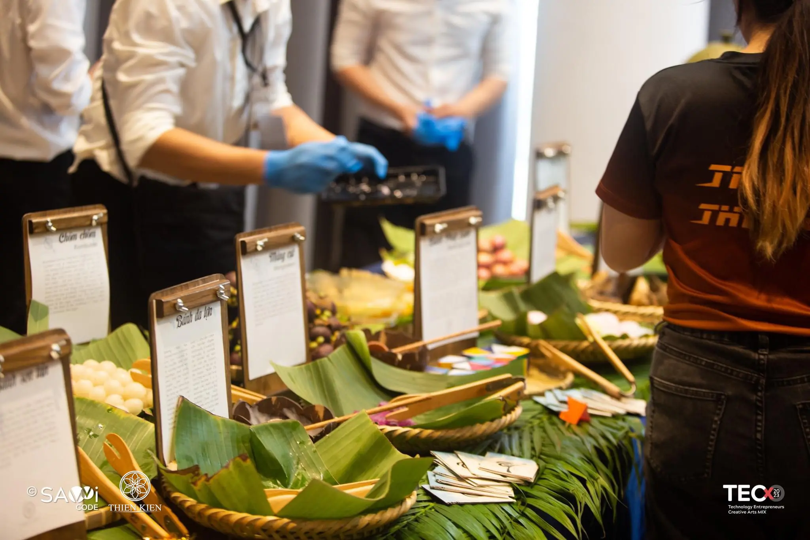
TECx2023 did not end at the tea break table. Thiện Kiến also prepared 100 gifts for the speakers. Each one was a handwoven cloth made by Black Thai artisans in Nghệ An.
From growing the cotton, spinning the thread, weaving the fabric, to dyeing the cloth — every step was completed by hand, with each piece taking nearly a month to finish.
We did not choose these gifts because they resembled souvenirs. We chose them because they reflected something Thiện Kiến has always believed quietly: the value of an object can still be felt through the time and hands behind it.
At a conference centered around technology and the future, the gifts introduced another kind of time and labor — one shaped by patience, repetition, and people who still continue making things slowly, by hand.
For us, hospitality is not only about what is placed on the table. It is also about what people continue carrying with them afterward.
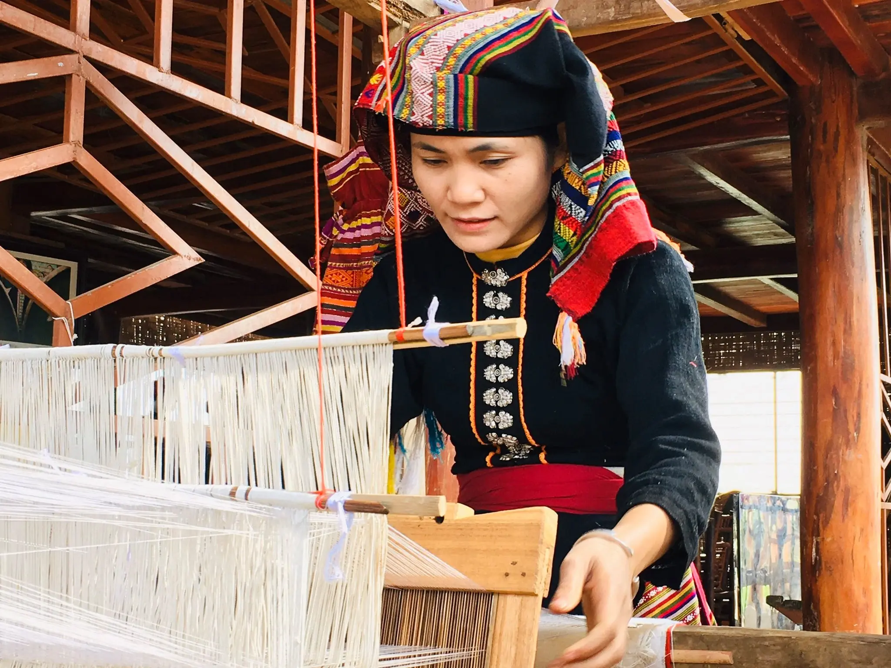
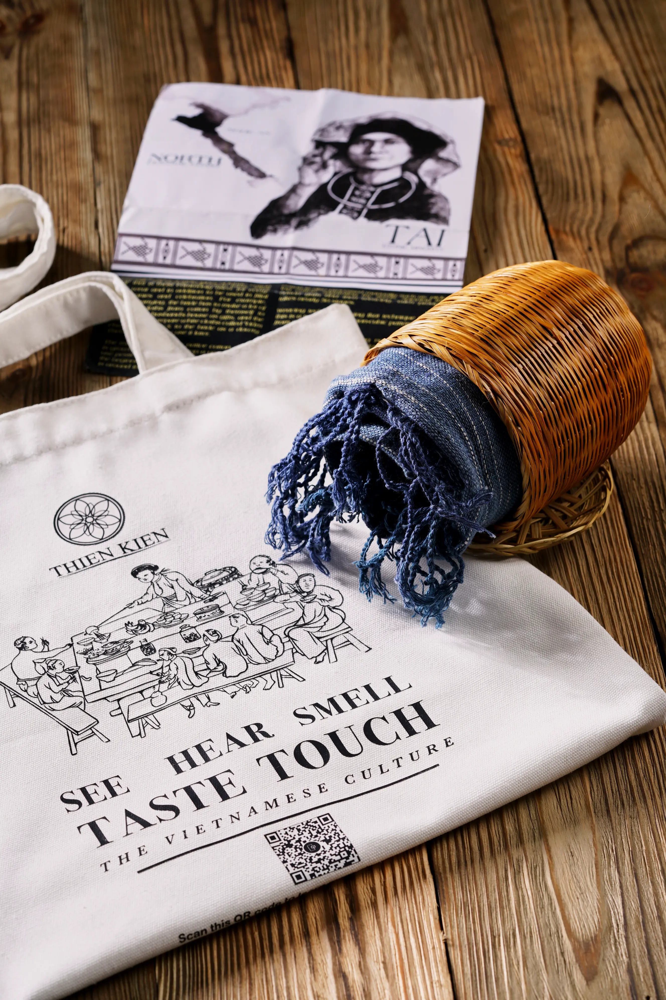
Over three consecutive days of talks and conversations, coffee naturally became part of the rhythm of the event. In Vietnam, coffee is less a product than a daily habit woven into ordinary life.
Thiện Kiến decided that each day of TECx2023 would introduce a different way coffee is prepared and enjoyed across the country. The intention was never simply variety — it was a way of showing how the same coffee bean could be shaped into entirely different habits, flavors, and daily rituals depending on the region.
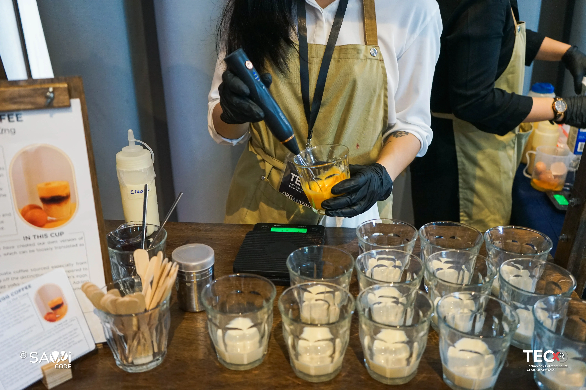
Two days before the event, Thiện Kiến met ARit, an AR studio that would later become part of the extended circle around the project.
After the first conversation between Hoàng Đại and Lê Phong (co-founder of ARit), an idea quickly emerged: using AR to extend the experience beyond the table itself.
Guests holding Thiện Kiến's Tết Đoan Ngọ brochure could scan a QR code and watch a three-dimensional map of Vietnam appear through their phones. Different fruits, harvesting seasons, and growing regions gradually appeared across the map, allowing guests to interact with the ingredients they had just encountered on the table.
What made the collaboration feel natural was that the technology never attempted to overpower the experience itself. TECx was a conference centered around technology, but Thiện Kiến never saw technology and culture as separate things. If used carefully, technology could simply become another way for people to notice place, seasonality, and the relationships behind what they were tasting.
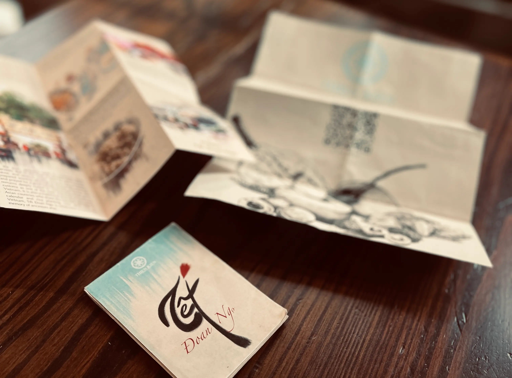
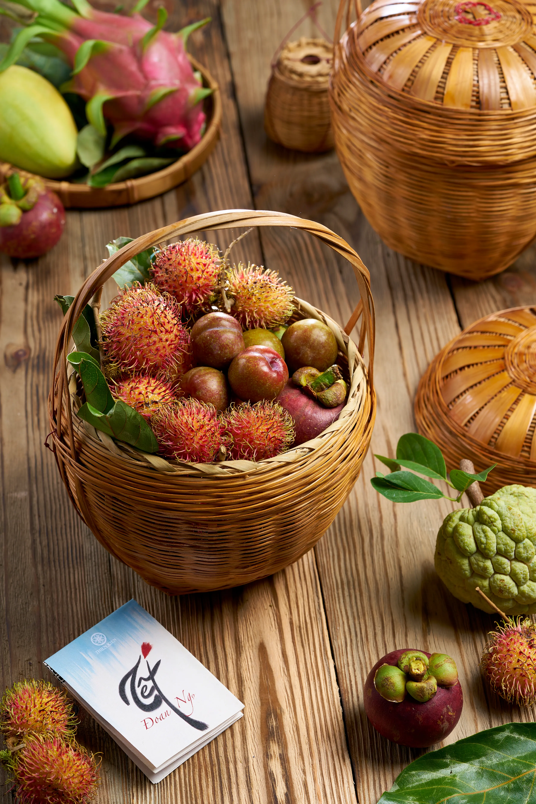
TECx2023 was also the first time Thiện Kiến prepared for an event across multiple consecutive days at this scale. Logistics, storage, sourcing, transportation, setup, and daily menu changes quickly became more demanding than anything the small team had handled before.
But the experience quietly established a standard that stayed with the team afterward. From that point forward, every project would be approached with the same level of preparation, timing, and care.
The people who first placed their trust in Thiện Kiến were never seen simply as clients. Their trust became something the team never treated lightly again.
Thiện Kiến would also like to thank Phil Tran — a close friend of Huy Đỗ, and one of the first people who trusted us in the early days.
May he rest peacefully.
We remain deeply grateful for the trust and kindness he gave the team at a time when very little had yet been proven.